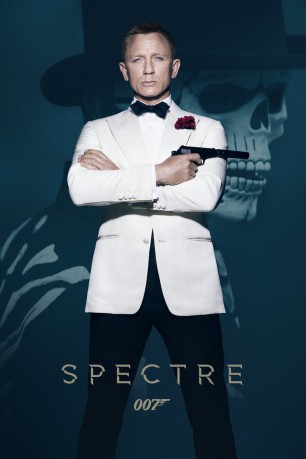

#3050 James Bond 25 - Daniel Craig - Spectre
Alternativ: Spectre
Auszeichnungen: 1 Oscars gewonnen 1 GoldenGlobes gewonnen
 
 IMDB-Wertung: 6.8 / 10
IMDB-Wertung: 6.8 / 10  Metascore: 60
Metascore: 60 
James Bond erhält eine kryptische Nachricht aus seiner Vergangenheit, die ihn auf die Spur einer finsteren Organisation bringt. Bond muss immer mehr entdecken, dass es viele Täuschungen und Lügen gibt, die er entschlüsseln muss. Während sein Boss M mit anderen Problemen kämpft, mit politischen Kräften konfrontiert ist, die den ganzen Geheimdienst gefährden, erkennt Bond erst nach und nach die schreckliche Wahrheit hinter SPECTRE.
Jahr: 2015
Dauer: 148 Minuten
FSK: 12
Land: England Studio: Sony Pictures ReleasingTonspuren: DTS - ,
Untertitel: Englisch, Deutsch,
Auflösung: 1080p (1920x808) Größe: 12800 MB
Genre: Action, Thriller, Abenteuer
Regisseur:  Sam Mendes
Sam Mendes
Drehbuch: John Logan, Neal Purvis, Robert Wade, Jez Butterworth, John Logan
Soundtrack: Thomas Newman
Darsteller:
Datei: X:\7+mehr(A-Z)\007 James Bond\James Bond 25 - Daniel Craig - Spectre (2015, FSK12, 1920x808).mkv seit 19.01.2016
Festplatte: HD Collection-7+mehr(A-Z)+Person
 Es gibt insgesamt 28 Filme in der Gruppe '7+mehr(A-Z)\007 James Bond'
Es gibt insgesamt 28 Filme in der Gruppe '7+mehr(A-Z)\007 James Bond'